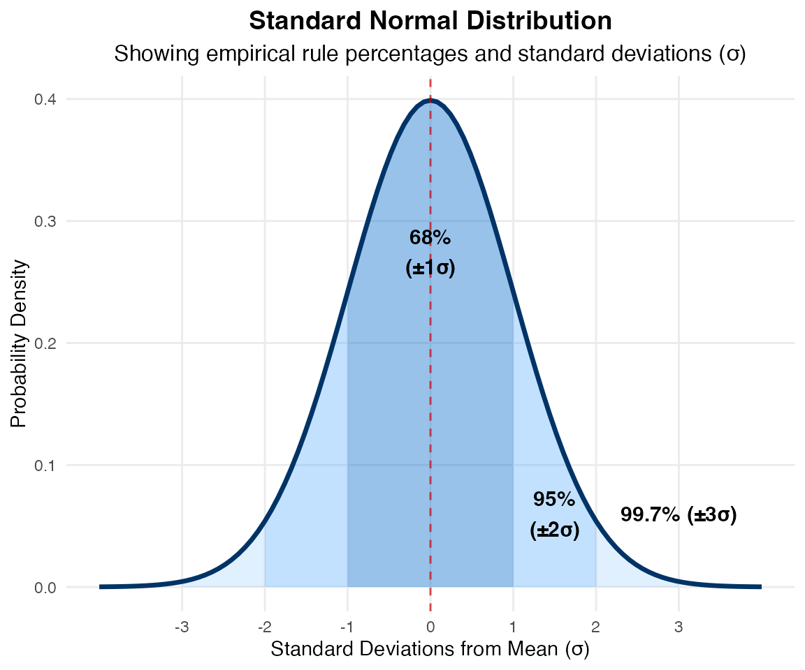

Statistical Inference
Statistical Inference
Using a sample to generalize (or infer) about the population.
- We know how to make a point estimate of a population - what else do we need in order to make a decision?
- How confident are we that our estimate can generalize to the rest of the population?
- We need to determine the uncertainty in our estimate
We use inferential statistics to make generalizations about an unknown population. The simplest way of doing this is to use the sample data help us to make a point estimate of a population parameter. We realize that due to sampling variability the point estimate is most likely not the exact value of the population parameter, but should be close to it. After calculating point estimates, we can build off of them to construct interval estimates, called confidence intervals.
Confidence Intervals
A confidence interval is another type of estimate, but instead of being just one number, it is an interval of numbers
- Provides a range a range of reasonable values where we expect the true population parameter to fall.
- Point estimate (statistic) has some variability and uncertainty since we estimate it based on a sample.
- We want to quantify and communicate this uncertainty.
There is no guarantee that a given confidence interval does capture the parameter, but there is a predictable probability of success. It is important to keep in mind that the confidence interval itself is a random variable, while the population parameter is fixed.
Business Example
Average streams per month
You work in the marketing department of a music company. You want to know the mean number of songs a consumer streams per month.
- You conduct a survey of 100 customers and calculate the sample mean (\bar{x}) and use it as the point estimate for the population mean (\mu)
- Suppose we know that the standard deviation \sigma = 100.
- Following the Central Limit Theorem, the Standard Error is:
\frac{\sigma}{\sqrt{n}} = \frac{100}{\sqrt{100}} = 10
If you worked in the marketing department of an entertainment company, you might be interested in the mean number of songs a consumer downloads a month from iTunes. If so, you could conduct a survey and calculate the sample mean, \bar{x}. You would use \bar{x} to estimate the population mean. The sample mean, \bar{x}, is the point estimate for the population mean, μ.
Suppose, for the iTunes example, we do not know the population mean μ, but we do know that the population standard deviation is \sigma = 100 and our sample size is 100. Then, by the central limit theorem, the standard deviation for the sample mean is \frac{\sigma }{\sqrt{n}}=\frac{100}{\sqrt{100}}=10.
What is the probability of sampling a certain mean value?
The Empirical Rule says that in approximately 95% of the samples, the sample mean, \bar{x}, will be within two standard deviations of the population mean \mu .
For our example, two standard deviations is (2)(10) = 20. The sample mean \bar{x} is likely to be within 20 units of \mu.
Because \bar{x} is within 20 units of \mu, which is unknown, then \mu is likely to be within 20 units of \bar{x} in 95% of the samples.
Because \bar{x} is within 0.2 units of μ, which is unknown, then μ is likely to be within 0.2 units of \bar{x} in 95% of the samples. The population mean μ is contained in an interval whose lower number is calculated by taking the sample mean and subtracting two standard deviations (2)(0.1) and whose upper number is calculated by taking the sample mean and adding two standard deviations. In other words, μ is between \bar{x}\text{ }-\text{ 0}\text{.2} and \bar{x}\text{ }+\text{ 0}\text{.2} in 95% of all the samples.
Calculate the Confidence Interval
We want to calculate the range of values which the true mean is likely to fall within 95% of the time, given our sample.
For the streaming example, suppose that a sample produced a sample mean \bar{x} = 200. Then the unknown population mean \mu is between \bar{x}-20=200-20=180 and \bar{x}+20=200+20=220 songs per month.
We can say that we are about 95% confident that the unknown population mean number of songs streamed per month is between 180 and 220. The approximate 95% confidence interval is (1.8, 2.2).
Confidence Interval: (Point Estimate \pm Margin of error) = 200 \pm 20 \text{ songs}
Calculate the Confidence Interval
Based on our sample, we can say two things. Either:
- The interval (180, 220) contains the true mean \mu, or…
- Our sample prodcued an \bar{x} that is not within 20 units of the true mean \mu. This would only happen for 5% of the samples.
We can say that we are about 95% confident that the unknown population mean number of songs downloaded from iTunes per month is between 1.8 and 2.2. The approximate 95% confidence interval is (1.8, 2.2). This approximate 95% confidence interval implies two possibilities. Either the interval (1.8, 2.2) contains the true mean μ or our sample produced an that is not within 0.2 units of the true mean μ. The second possibility happens for only 5% of all the samples (95–100%).
Remember that a confidence intervals are created for an unknown population parameter. Confidence intervals for most parameters have the form: (Point Estimate ± Margin of Error) = (Point Estimate – Margin of Error, Point Estimate + Margin of Error) The margin of error (MoE) depends on the confidence level or percentage of confidence and the standard error of the mean. When you read newspapers and journals, some reports will use the phrase “margin of error.” Other reports will not use that phrase, but include a confidence interval as the point estimate plus or minus the margin of error. These are two ways of expressing the same concept. A confidence interval for a population mean with a known standard deviation is based on the fact that the sample means follow an approximately normal distribution. Suppose that our sample has a mean of and we have constructed the 90% confidence interval (5, 15) where MoE = 5.
Communicating Confidence Intervals
The interpretation should clearly state the confidence level (CL), explain what population parameter is being estimated (here the population mean), and state the confidence interval (both endpoints).
“We can be _______ % confident that the interval we created, _______ to ________ captures the true population mean (include the context of the problem and appropriate units).”
We state the range within which our evidence indicates contains the population mean.
Exercise
Calculate the confidence interval for your sample.